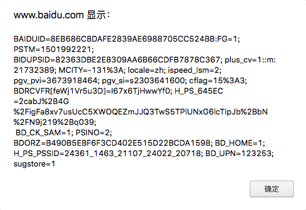

第一节：精讲
1.通信协议
通信协议，就是在互联网中，实体之间完成通信或服务所需要遵循的规则和约定。
语言交流的规则：语法，主谓宾如何排列。
说白了，就是咱俩说话用普通话还是家乡话，用英语还是法语，唱着说还是好好说，咱们提前规定好。这就是通信协议
2.TCP/IP
IP协议Internet Protocol，也可以称为IP地址，用来确定地址和区分网关。
TCP协议面向连接的协议（通信之前必须先建立连接）
于是，TCP相对可靠，它建立的连接的过程称为3次握手。
因此，可以确保消息的准确送达。
举例：
局域网游戏，一般多人联机对战，一人掉线，全部等待。说明玩家和玩家之间采用了TCP协议。
因为不允许丢失任何数据，不然有可能会出现两边不一致的情况：
我的画面把你杀死了，你的画面磕了个血瓶还活着
UDP面向数据包的协议（不可靠协议）
无需建立连接，发送消息也无需对方确认，无法保证数据的发送顺序，以及准确率
如：数据发送的顺序是a.......b.......c.......d
由于网络延迟，对方收到的信息可能是b.....d.....a....
UDP常用语视频、语音等通信（丢掉一帧画面是无所谓的）
TCP和UDP的区别，如果TCP是打电话（你一句我一句），那么UDP就是发短信（发送之后不知道对方是否收到）
3.HTTP
HTTP协议是一种无状态协议，基于TCP协议的一种高级协议，用于客户端和服务器之间的通信。
因为无法监听当前连接的状态，会导致每次请求页面，收到页面之后，连接会被断开
比如：打电话时我刚说完一句话，你就挂了电话。
购物时，登录账号密码，开始挑选商品，连接断卡，重新登陆，加入购物车继续挑选商品时，连接断开，重新登陆，继续选择商品加入购物车，重新登陆......解救剁手
如何解决这个问题呢？
一种新技术应运而生－－－－会话跟踪技术cookie。
会话跟踪技术，在一次会话从开始到结束的整个过程，全程跟踪记录客户端的状态（如：是否登录，购物车信息，是否下载，是否点赞，播放进度等等）
4.cookie的概念
cookie(会话跟踪技术)，相当于第一次跟服务器连接后，服务器给你发的一个身份牌，上面可以记录跟你有关的信息（是否登录，购物车等等信息），以后只要再跟服务器通信，必须带着这个令牌，这样一来，服务器会直接知道你身份牌上所有的信息。
cookie存在浏览器的缓存中。
什么是缓存？数据交换的缓冲区－－－－临时储存
5.cookie的特点
1.只能使用文本文件（如果浏览器可以随意在客户端机器生成文件，比如身份令牌，那将是个定时炸弹，安全问题会变得非常严重）
2.文件有大小限制4K（文件若没有大小限制，相当于身份令牌重几百斤，挂在脖子上什么感觉？）
3.数量限制，小于50条（一般浏览器限制大概在50条左右，门禁卡里能存下一部蓝光高清么）
4.读取有域名限制（不可跨域读取，只能由写入cookie的 同一域名 的网页进行读取。简单来说，谁写的cookie，谁才有权利读取）
5.时效限制（每个cookie有时效，最短的有效期是：会话级别(关闭浏览器，cookie销毁)；
注意：安全学的基本理论：密码锁每次打开都需要重新输入密码，如果只输入一次密码，以后不在验证，就没有安全可言）
6.cookie的使用
打开百度，在控制面板中输入alert(document.cookie);就会弹出百度的cookie。如下：

但是你肯定看不懂，因为百度的cookie是加密的
document.cookie = "name=abc"
cookie的格式要求，名称＝值
在cookie 的名或值 中 不能使用分号（;）、逗号（,）、等号（=）以及空格这是cookie的赋值规则
指定有效期：
设置cookie的保存时间，通过给expires添加一个日期，设置cookie的过期时间
此处可以借用Date();
var date = new Date();
date.setDate(date.getDate()+28);
表示获取当前日期的天数，增加28天之后，重新设置给日期，此时date就表示未来的某个时间
document.cookie = "name=abc;expires=" + date;
此句表示，此条cookie在date的时间时效，而date的时间为当前日期加上28，也就是28天之后cookie失效
指定路径：
document.cookie = "user=admin;path=/;expires="+d;
获取
var str = document.cookie;
str返回当前cookie的值，以字符串的形式
删除cookie，相当于将cookie的有效时间设置为负。
第三节：精讲
1.cookie的封装
1.一周内免输入
2.商品浏览记录
1.掌握cookie的安全策略
2.掌握cookie的封装
3.掌握cookie跟json的配合
自行拓展：XSS攻击简单原理